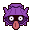
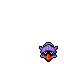
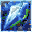
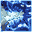
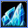

Pokédex / #090

Shellder #090
Water
It is encased in a shell that is harder than diamond. Inside, however, it is surprisingly tender.
Generation 1 · Kanto

Stats
| Attack | 65 | |
|---|---|---|
| Defense | 100 | |
| Sp. Atk | 45 | |
| Sp. Def | 25 |
In the wild
| Wild level | 5–15 |
|---|---|
| HP | 30 |
| Experience | 5 |
| Egg groups | Water 3 |
Evolution
- Evolves into Cloyster at level 35, with a Water Stone.
Moves
| Level | Move | Type | Category | Power | Energy | Cooldown | Effect | |
|---|---|---|---|---|---|---|---|---|
| 1 | Tackle | Normal | Physical | 15 | 15 | 1s | Tackle is one of the most common and basic moves a Pokemon learns. It deals damage with no additional effects. | |
| 1 | Water Gun | Water | Special | 40 | 45 | 9s | Water Gun inflicts damage and has no secondary effect. | |
| 8 | Supersonic | Normal | Status | – | 20 | 14s | Supersonic causes the target to become confused. | |
| 13 |  | Icicle Spear | Ice | Physical | 25 | 90 | 18s | The user launches sharp icicles at the target two to five times in a row. |
| 16 | Protect | Normal | Status | – | 70 | 60s | Protect raises the user's Defense by two stages. | |
| 25 |  | Clamp | Water | Physical | 35 | 90 | 15s | The target is clamped and squeezed by the user's very thick and sturdy shell for four to five turns. |
| 28 | Ice Shard | Ice | Physical | 10 | 40 | 9s | Ice Shard deals damage and has no secondary effect. | |
| 32 |  | Razor Shell | Water | Physical | 75 | 75 | 12s | Razor Shell deals damage and has a 50% chance of lowering the target's Defense by one stage. |
| 37 | Aurora Beam | Ice | Special | 65 | 70 | 16s | Aurora Beam deals damage and has a 10% chance of lowering the target's Attack by one stage. | |
| 40 | Whirlpool | Water | Special | 35 | 100 | 20s | The user traps the target in a violent swirling whirlpool for four to five turns. | |
| 44 | Brine | Water | Special | 65 | 80 | 15s | Brine inflicts damage, and its power doubles to 130 when the target is at or below 50% health. | |
| 49 | Iron Defense | Steel | Status | – | 90 | 60s | Iron Defense raises the user's Defense stat by two stages. | |
| 52 | Ice Beam | Ice | Special | 90 | 100 | 22s | Ice Beam inflicts damage and has a 10% chance of freezing the target. | |
| 56 | Shell Smash | Normal | Status | – | 70 | 30s | The user breaks its shell, which lowers Defense and Sp. Def stats but sharply raises its Attack, Sp. Atk, and Speed stats. | |
| 61 | Hydro Pump | Water | Special | 110 | 120 | 27s | Hydro Pump inflicts damage and has no secondary effect. |
Field abilities
Headbutt
Special abilities
Shell ArmorSkill Link
Egg moves
Aqua RingAvalancheBarrierBubblebeamIcicle SpearMud ShotRapid SpinRock BlastScreechTake DownTwineedleWater Pulse
Technical machines
BideBlizzardBubblebeamDouble EdgeDouble TeamExplosionHailIce BeamIcy WindMimicRageRain DanceReflectRestSelfdestructSubstituteSwiftTake DownToxicTri AttackWater GunWater Pulse
Drops
| Item | Amount | Chance | |
|---|---|---|---|
| water gem | 1 | 66.7% | |
| water pendant | 1 | 4.17% | |
| shell bell | 1 | 3.33% | |
| flawless ice crystal | 1 | 3.33% | |
| frost charm | 1 | 2.67% | |
| harden shell | 1 | 2.22% | |
| shellder doll | 1 | 0.1% | |
| TM 13 | 1 | 0.001% | |
| TM 49 | 1 | 0.001% | |
| TM 54 | 1 | 0.001% |